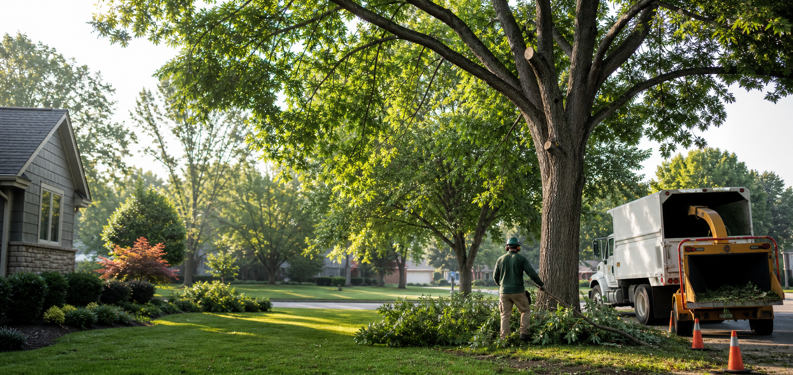

Tree service · Outdoor property care
Safer trees. Cleaner yards. Work done right.
A polished website concept for Stassi's Outdoor Services, built to help homeowners quickly understand the work, trust the crew, and request an estimate.
Core services
Everything a homeowner needs to feel confident before calling.
This sample shows how this site could present tree work in a way that feels experienced, trustworthy, and easy to act on.
Tree Trimming
Shaping, clearance, deadwood removal, and canopy care to improve safety, curb appeal, and long-term tree health.
Tree Removal
Careful removal planning for damaged, declining, crowded, or problem trees near homes, fences, and driveways.
Storm Cleanup
Fast help after high winds and heavy weather, with cleanup messaging that makes urgent work easy to request.
Brush & Limb Hauling
Removal of downed limbs, brush piles, and yard debris so customers know the job ends with a clean property.
Stump Grinding
A dedicated section for stump work can capture homeowners who need the final piece of a removal project handled.
Seasonal Property Care
Room to feature leaf cleanup, small outdoor jobs, or add-on services Rick wants to promote throughout the year.
Why customers choose Stassi's
Local, responsive, and careful around the property.
A strong small-business website should sell trust before it sells a service list. This panel gives the site a place to emphasize what makes this crew different.
- Clear estimates before work begins
- Respectful cleanup after the job
- Attention to homes, fences, utilities, and landscaping
- Friendly service from a local owner
Designed to convert
A page that turns referrals into estimate requests.
When someone hears Rick's name and visits the link, the website should immediately answer three questions: what does he do, can I trust him, and how do I get a quote?
This sample includes the kind of structure a full website could expand on: service pages, before-and-after photos, reviews, emergency cleanup messaging, service area pages, and a simple estimate form.
- Residential tree service
- Storm cleanup
- Yard debris hauling
- Local estimates
- Owner-operated feel
Simple process
Make the next step obvious.
Customers are more likely to call when they understand what happens next. A process section reduces hesitation and makes the business feel organized.
- Send a few detailsCustomers share the address, photos if available, and what they need handled.
- Get a clear estimateOwner reviews the job, explains the scope, and gives a practical next step.
- Schedule the workThe crew arrives prepared, protects the property, completes the service, and cleans up.
Sample call to action
Ready for a website that helps customers call you first?
This demo page can become a full Stassi's Outdoor Services website with real photos, Rick's actual phone number, service area, reviews, and estimate form.